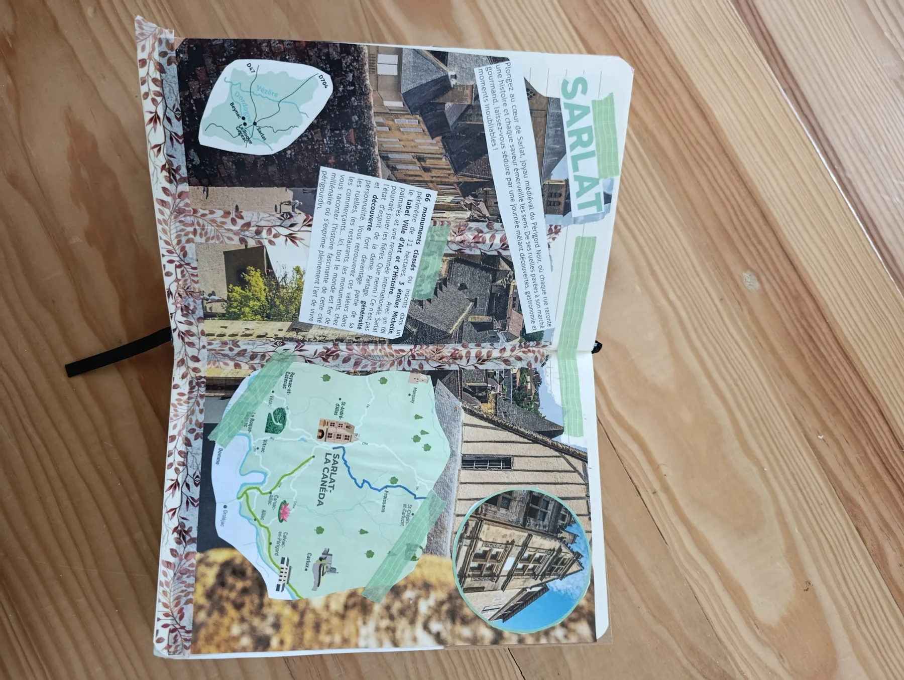
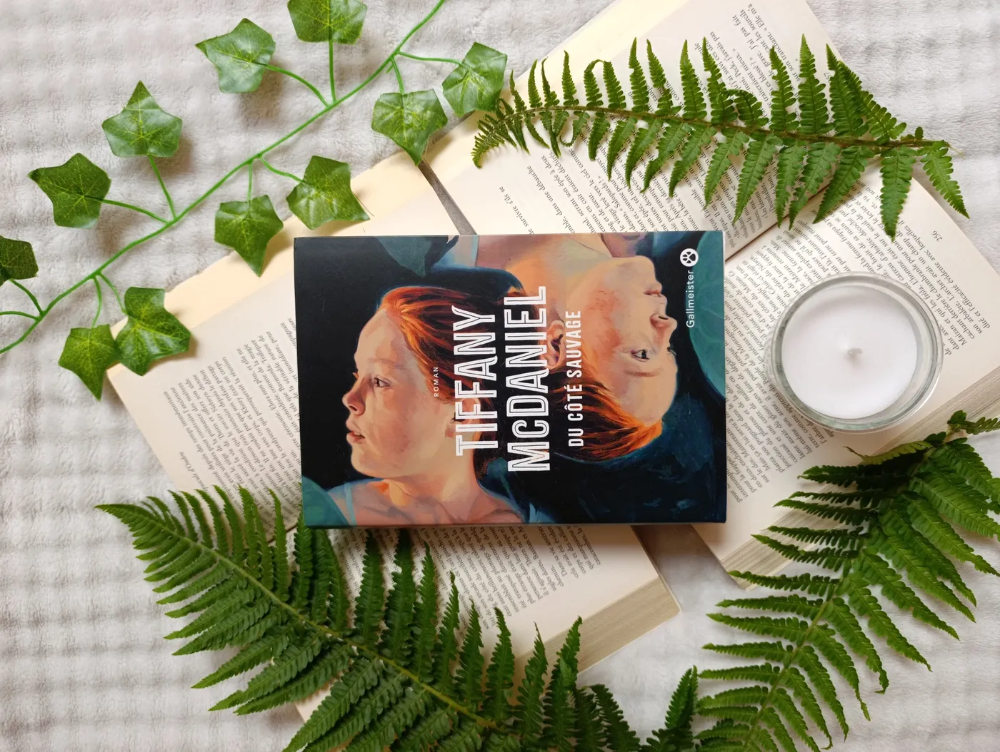
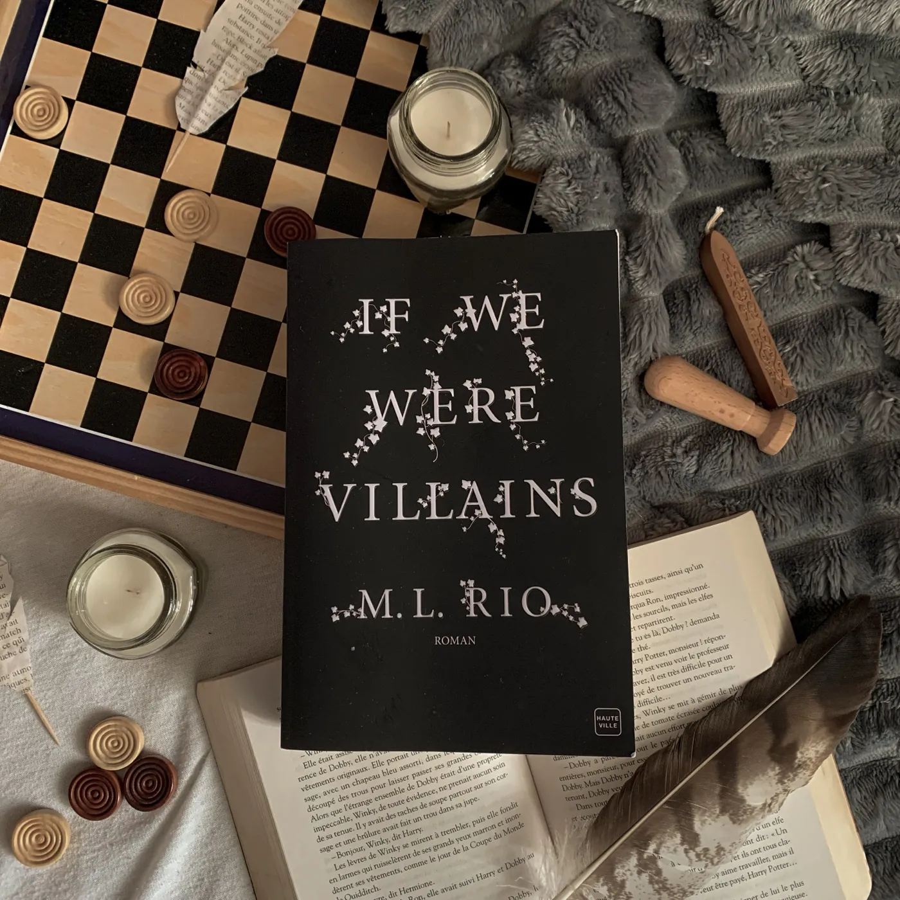
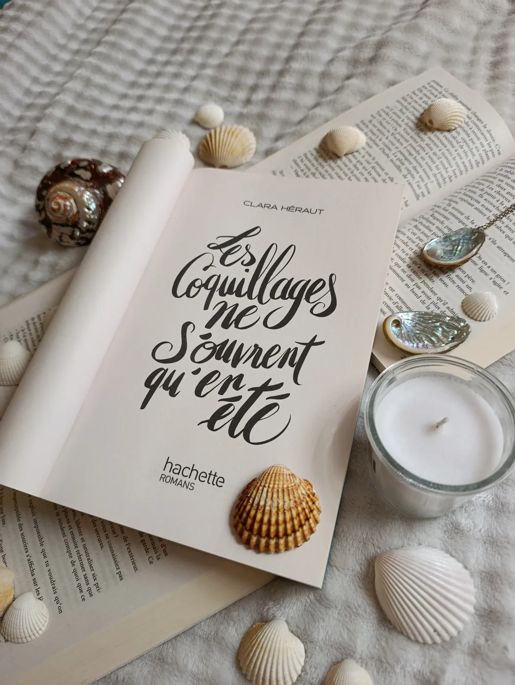
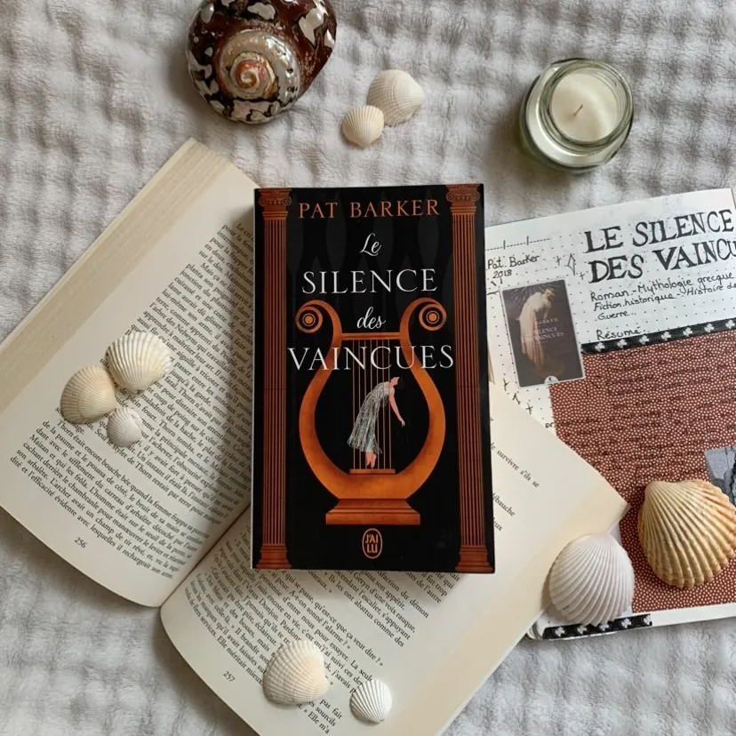
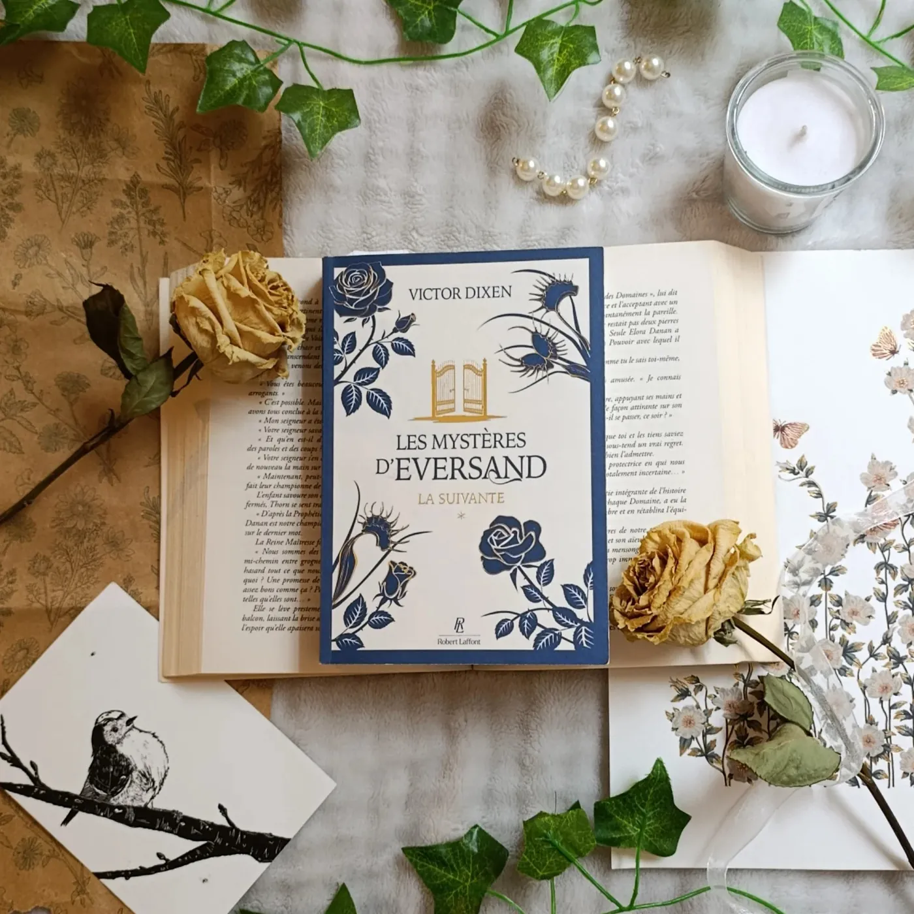
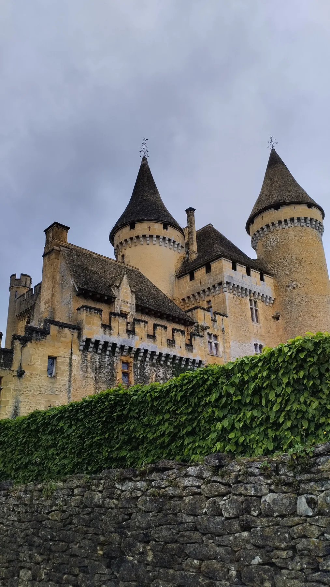
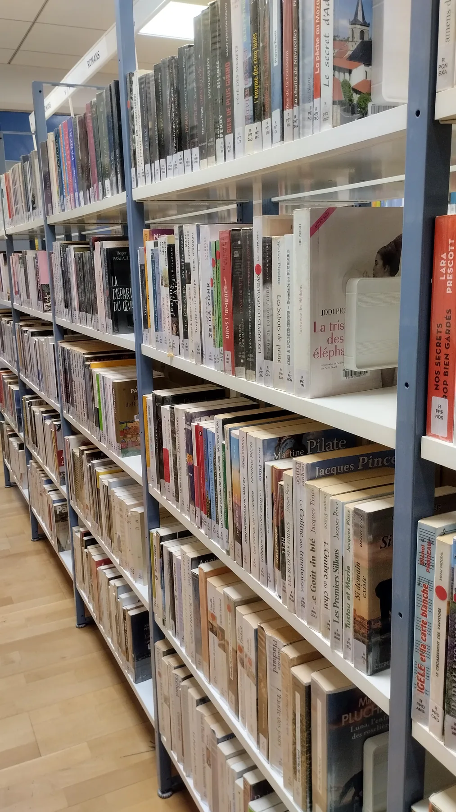
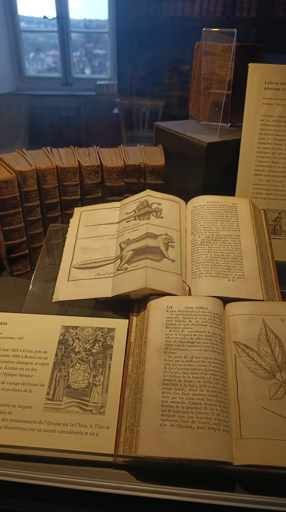

Formée à la communication et aux métiers du livre, je travaille à l’intersection du contenu, de l’image et de la transmission. Mon objectif : révéler ce qui rend chaque projet singulier et lui donner une forme claire, sensible et mémorable.
Faites glisser pour voir la suite →
01Stratégie éditoriale
02Création de contenus
03Médiation culturelle
04Photographie & reportage
observer → raconter → transmettre
Projets sélectionnés
Des idées rendues visibles.
Une sélection de formats conçus pour informer, transmettre et créer du lien.
Faites glisser pour découvrir les projets →
01
Communication éditoriale
Supports institutionnels & identité éditoriale
Rôle : conception et rédaction. Livrables : dossiers, publications sociales et supports graphiques harmonisés pour clarifier la prise de parole.

02
Médiation culturelle
Valorisation de l’Ancien Grand Séminaire
Rôle : recherche, écriture et médiation. Livrables : scripts de visite et supports interactifs pour rendre l’histoire du lieu accessible.
03
Événementiel
Festival Vues du Québec
Rôle : coordination et communication. Livrables : accueil des invités, relations presse et contenus destinés à prolonger les temps forts.
Ana & The Books
Lire, analyser, mettre en lumière.
Chroniques, recommandations et créations visuelles : un univers éditorial dédié à la littérature, animé par le goût du détail et de la conversation.
Mises en scène, couvertures et atmosphères conçues pour prolonger chaque lecture.
Faites glisser pour parcourir les visuels →





Les Carnets Culturels
Regarder le patrimoine autrement.
Architecture, bibliothèques et lieux de mémoire racontés par l’image.
Faites glisser pour explorer les lieux →



Photothèque
Dans les coulisses des projets.
Une sélection de recherches, médiations, rencontres, lectures et explorations patrimoniales. La collection complète reste accessible.
Coulisses · 01
Coulisses · 02
Livre · 03
Livre · 04
Coulisses · 05
Médiation · 06
Médiation · 07
Médiation · 08
Médiation · 09
Médiation · 10
Médiation · 11
Événement · 12
Événement · 13
Événement · 14
Coulisses · 15
Coulisses · 16
Chroniques · 17
Chroniques · 18
Chroniques · 19
Chroniques · 20
Patrimoine · 21
Patrimoine · 22
Patrimoine · 23
Patrimoine · 24
Patrimoine · 25
Patrimoine · 26
Patrimoine · 27
Patrimoine · 28
Patrimoine · 29
Patrimoine · 30
Patrimoine · 31
Patrimoine · 32
Patrimoine · 33
Patrimoine · 34
Patrimoine · 35
Patrimoine · 36
Patrimoine · 37
Patrimoine · 38
Patrimoine · 39
Coulisses · 40
Survolez pour mettre en pause · Cliquez pour agrandir
Travaillons ensemble
Des collaborations sur mesure.
Maisons d’édition, auteurs, musées, bibliothèques, festivals et structures patrimoniales : chaque projet commence par une histoire à rendre visible et accessible.
Faites glisser pour comparer les offres →
01
Formule Chronique
Une lecture critique complète et une diffusion soignée sur les plateformes littéraires.
Lecture analytique et approfondie de l’ouvrage
Chronique illustrée sur Instagram ou TikTok
Avis construit sur Babelio et Goodreads
Indexation de la note de lecture sur Gleeph
Recommandé
02
Formule Mise en lumière
Un dispositif transmédia associant direction artistique, vidéo et conversation.
Lecture attentive et note d’intention
Photographies haute définition et direction artistique
Chronique vidéo et carrousel éditorial
Stories interactives et contenus coulisses
Diffusion sur Babelio, Goodreads, Gleeph, Amazon et Fnac
Collaborations éditoriales
Chroniques récentes.
Une sélection de lectures mises en récit et en images pour les communautés littéraires.
Faites glisser pour voir les chroniques →
Victor Dixen — Robert Laffont · Sortie le 02/04/2026
Les Mystères d’Eversand, tome 1 : La Suivante
MystèreFamilleSecretsNaturePartenariat Gleeph & Robert Laffont
Lire la chronique
Résumé de l’œuvre
Birdie, étudiante sans le sou, accepte un poste de suivante dans un mystérieux manoir situé à Eversand. Derrière le charme printanier de cette île et de la puissante famille Rosemore se cachent de sombres secrets.
Mon avis critique
Un roman captivant, à l’ambiance florale, magique et inquiétante. La nature y est omniprésente et l’univers rappelle les grandes familles mystérieuses d’Inheritance Games. Une lecture addictive et immersive.
Flaubert adolescent dépose sur le papier une passion amoureuse qui le hante et nourrit ses réflexions sur la vie, la sensibilité et les émotions.
Mon avis critique
Un récit intimiste qui donne l’impression de lire un journal personnel. La couverture aux teintes automnales et les linogravures des éditions 1001 Nuits font également de ce texte un très bel objet-livre.
Clara Héraut — Hachette Romans
Les coquillages ne s’ouvrent qu’en été
Relations familialesSanté mentaleQuête de soiPassage à l’âge adulte
Lire la chronique
Résumé de l’œuvre
Un roman sur les relations familiales, la santé mentale, les ruptures, l’orientation personnelle et professionnelle, dans une atmosphère estivale.
Mon avis critique
Une lecture pleine de justesse et de douceur malgré des sujets parfois lourds. Phoebe et Léna sont deux sœurs différentes mais profondément humaines. Un roman touchant et sincère sur le passage à l’âge adulte.
Pat Barker
Le Silence des Vaincues
Réécriture mythologiqueFéminismeGuerre de TroieRésilience
Lire la chronique
Résumé de l’œuvre
Briséis, autrefois reine, devient esclave d’Achille. À travers son regard, le roman révèle l’envers du mythe et donne la parole aux femmes oubliées par l’Histoire.
Mon avis critique
Une relecture mythologique intime et poignante qui change de perspective sur la guerre de Troie. Une recommandation forte pour les lectrices et lecteurs de Circé de Madeline Miller.
M. L. Rio — Hauteville
If We Were Villains
Dark academiaShakespeareSecretsAmitiés complexes
Lire la chronique
Résumé de l’œuvre
Une plongée au cœur d’une école d’art à l’atmosphère sombre, rythmée par Shakespeare, des amitiés complexes et des secrets lourds de conséquences.
Mon avis critique
Une ambiance dark academia envoûtante, des personnages intrigants et une tension idéale pour une lecture d’automne. Le roman donne envie de passer encore davantage de temps avec ses protagonistes.
Tiffany McDaniel — Gallmeister
Du côté sauvage
SororitéTraumatismeAmérique ruralePlume poétique
Lire la chronique
Résumé de l’œuvre
Deux sœurs jumelles tentent de survivre et de rester humaines dans une Amérique rurale marquée par la pauvreté, la violence et les cicatrices familiales.
Mon avis critique
Un roman bouleversant, porté par une plume poétique et métaphorique. La relation entre les deux sœurs est puissante et la fin laisse un impact émotionnel durable. Une lecture difficile qui mérite une attention particulière aux avertissements de contenu.
Correspondances
Retours de collaboration.
Faites glisser pour lire les témoignages →
“Merci pour cette très belle mise en valeur et votre lecture fine et attentive.”
Maison d’édition Calype
“Merci ! Quelle magnifique mise en valeur ! À la hauteur de cette artiste.”
Maison d’édition Calype
“Merci beaucoup pour cette jolie chronique et ces jolies images, et pour votre rapidité.”
Auteur partenaire
“Merci beaucoup pour ton retour sur mon premier recueil d’écrits.”
Regards sur le livre, le patrimoine et la médiation.
Des notes de fond ancrées dans les lectures, les lieux visités et les projets réalisés.
LivresNote de fond · 6 min
Comment les réseaux sociaux transforment la recommandation littéraire
De la photographie au format vidéo, chaque plateforme modifie la manière de présenter un livre et d’ouvrir la conversation.
Lire la note de fond
Une recommandation littéraire ne se résume plus à un avis. Elle devient une expérience éditoriale qui associe lecture attentive, choix visuels et connaissance de sa communauté.
Le format doit rester au service du livre : une photographie installe une atmosphère, un carrousel structure l’analyse et une vidéo permet d’incarner une émotion de lecture. La cohérence entre ces supports donne davantage de portée à la chronique sans en appauvrir le propos.
MédiationÉtude de projet · 7 min
L’Ancien Grand Séminaire : penser une médiation numérique in situ
Comment rendre accessible l’histoire d’un monument tout en respectant son architecture, ses usages et ses publics ?
Lire la note de fond
La médiation numérique commence par l’observation du lieu. Les outils interactifs n’ont de sens que s’ils aident le visiteur à regarder, à comprendre et à relier les différentes strates de l’édifice.
Le travail consiste alors à hiérarchiser les informations, adapter le vocabulaire aux publics et imaginer un parcours qui ne détourne jamais l’attention du patrimoine lui-même.
PatrimoineCarnet de terrain · 5 min
Photographier un lieu culturel sans perdre son atmosphère
Lumière, cadrage et détails : quelques principes pour raconter un édifice au-delà de la simple documentation.
Lire la note de fond
Un reportage patrimonial doit montrer l’échelle du lieu, mais aussi les traces qui le rendent vivant : une matière, une lumière, un rayonnage ou un détail architectural.
Alterner les vues d’ensemble et les plans rapprochés permet de construire un récit. La série photographique devient alors une visite guidée silencieuse, capable de transmettre autant une information qu’une sensation.
CultureRéflexion professionnelle · 4 min
Prolonger un événement culturel après la rencontre
Une table ronde ou un festival ne s’arrête pas lorsque le public quitte la salle : les contenus peuvent en préserver la mémoire.
Lire la note de fond
Préparer les formats avant l’événement permet de recueillir les bons éléments : citations, photographies, moments clés et réactions du public.
Après la rencontre, ces matériaux deviennent un compte rendu, une sélection visuelle ou une série de publications. L’événement gagne ainsi une seconde vie et touche des personnes qui n’étaient pas présentes.
Une idée, un lieu, un livre ?
Créons quelque chose qui mérite d’être transmis.
Pour une collaboration éditoriale, culturelle ou événementielle, contactez-moi directement sur le réseau professionnel.